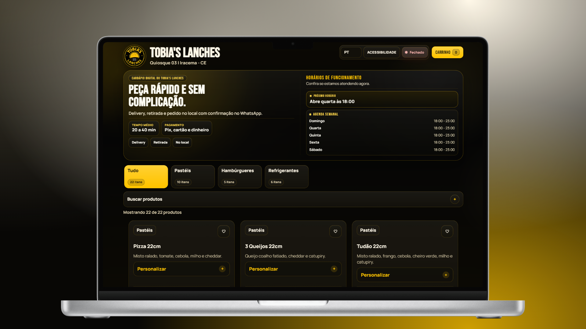
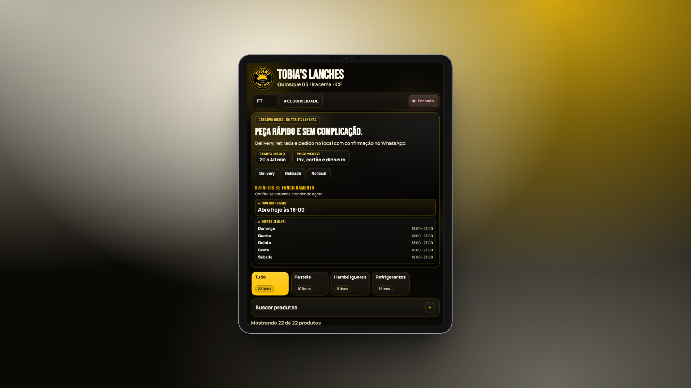
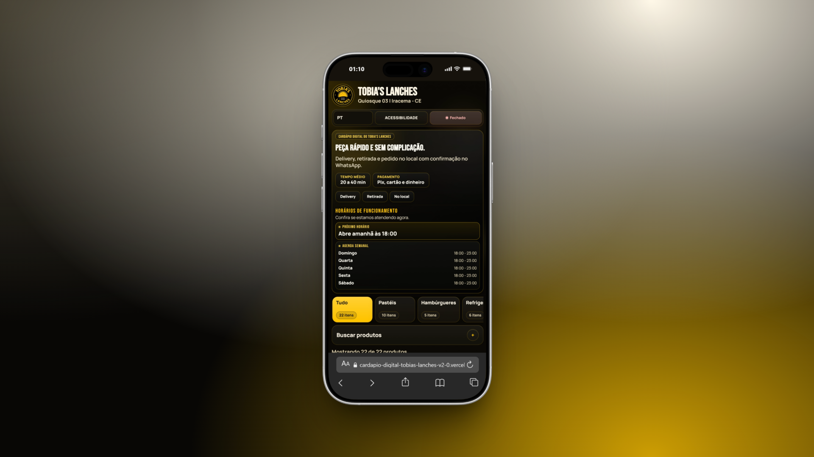

Atual
Cardápio Digital v2.0 - Tobia's Lanches
Evolução do cardápio digital criada para unir catálogo público, checkout por WhatsApp e um painel Admin mais preparado para manutenção diária e operação online.
- HTML5
- CSS3
- JavaScript Vanilla
- Supabase
- Vercel
Contexto da versão
A v2.0 nasceu como evolução direta da primeira versão do cardápio digital. A proposta continua a mesma, mas a base ficou mais madura: navegação pública melhor resolvida, checkout mais sólido, Admin mais preparado para a rotina real e estrutura pronta para operar online sem deixar de ser simples de publicar.
Recursos principais
- Catálogo público mais claro, com melhor leitura de categorias, produtos, combos e adicionais.
- Carrinho e checkout estruturados para entrega, retirada ou consumo no local, com taxa por localidade, mesa, Pix e dados de endereço mais completos.
- Painel Admin mais amplo para produtos, categorias, adicionais, combos, configurações, relatórios e operação online com Supabase.
O que este projeto demonstra
- Capacidade de evoluir uma solução simples para um sistema mais consistente, sem perder clareza de uso.
- Equilíbrio entre experiência do cliente, manutenção administrativa e publicação.
- Estrutura pensada para continuar crescendo, inclusive em operação online, com base técnica mais organizada.